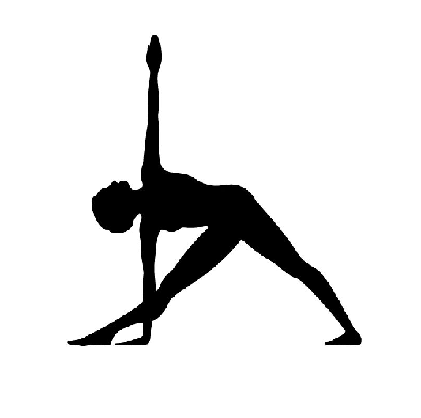

clear
clc
close all
im = imread('/home/sajal/3-1/DIP/Assignments/assignment4/yogasan/y4.jpg');
figure,imshow(im)
s = strel('disk',1);
im1 = imerode(im,s);
im2 = im-im1;
im3 = im2bw(im2,0.1);
figure,imshow(im3)
v = bwboundaries(im3);
bound = v(1);
boundarr = cell2mat(bound);
imb = zeros(size(im3));
for i=1:size(boundarr,1)
a = boundarr(i,:);
imb(a(1),a(2))=255;
end
figure,imshow(imb);
code = [];
for j=1:size(boundarr,1)-1
a = boundarr(j,:);
b = boundarr(j+1,:);
c = b-a;
if(c(1)==0 && c(2)==1)
code =[code;0];
end
if(c(1)==-1 && c(2)==1)
code =[code;1];
end
if(c(1)==-1 && c(2)==0)
code =[code;2];
end
if(c(1)==-1 && c(2)==-1)
code =[code;3];
end
if(c(1)==0 && c(2)==-1)
code =[code;4];
end
if(c(1)==1 && c(2)==-1)
code =[code;5];
end
if(c(1)==1 && c(2)==0)
code =[code;6];
end
if(c(1)==1 && c(2)==1)
code =[code;7];
end
end
diffcode = mod(diff(code),8);
decision = zeros(size(diffcode,1),1);
rotatedcodes = zeros(size(diffcode,1));
for j=1:size(diffcode,1)
rotcode = circshift(diffcode,j);
rotatedcodes(j,:) = rotcode;
k = min(find(rotcode > 0));
decision(j)=k;
end
[val ind] = max(decision);
fcode = rotatedcodes(ind,:);
Warning: Image is too big to fit on screen; displaying at 67%
Warning: Image is too big to fit on screen; displaying at 67%
Warning: Image is too big to fit on screen; displaying at 67%
